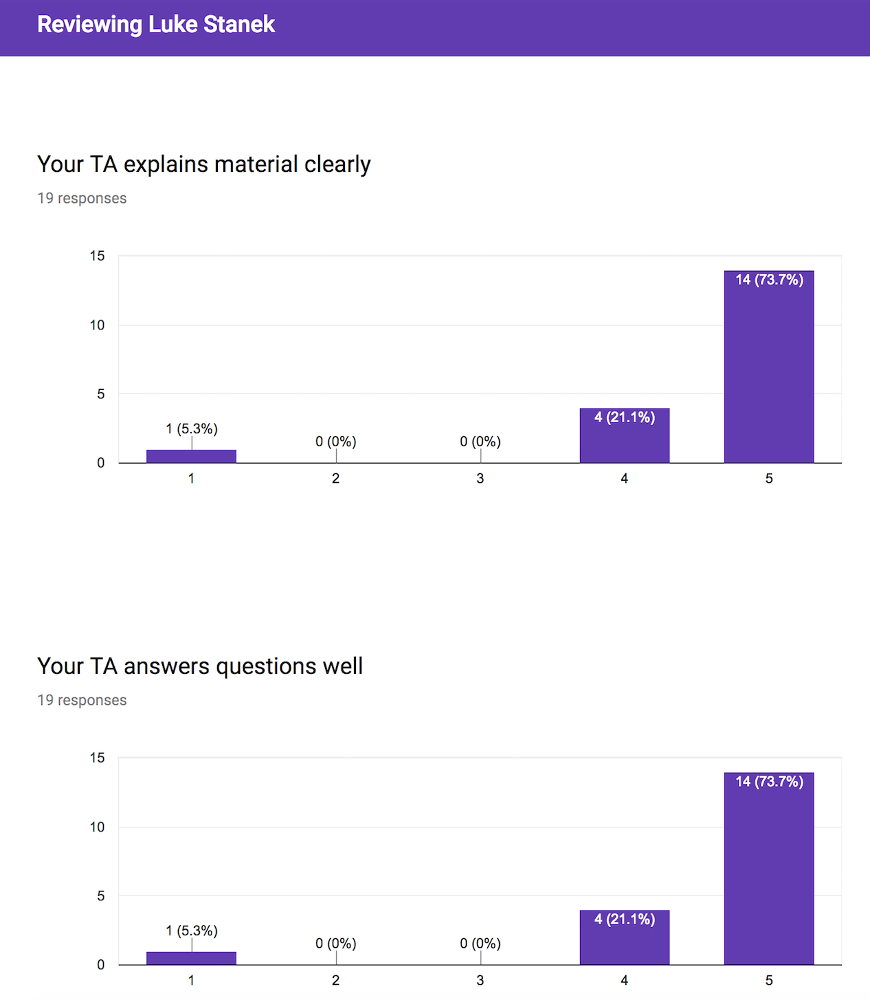

Before coming to Michigan State university, I earned my bachelor's and master's degree in applied mathematics from The University of Akron in Akron, Ohio, which is also my hometown.
Some of my interests include: playing guitar, Cleveland Indians baseball, and camping/hiking. I also have a passion for teaching and helping students. I have taught many classes both at The University of Akron and MSU.
Posters
Z Fundamental Science Program Workshop, Albuquerque, NM. Molecular Dynamics — Hydrodynamics Hybrid Method for Non-Ideal Plasmas
Abstract ▸
Starting from a multispecies Klimontovich description, we derive a hybrid method that models non-ideal plasmas. The model consists of coupled molecular dynamic (MD) and hydrodynamic equations of motion to govern the dynamics of the ion species and electrons respectively. With this model, we keep correlation information and is exact at describing the system until closures are added. Different closures allow for the modeling of phenomena such as heat conduction, or energy transfer between particles that would not be possible if simpler methods like Yukawa particles were employed. Unlike a pure MD model which requires a small timescale to resolve the dynamics of the fast moving electrons relative to the ion species, this model avoids small timescales making computation more tractable while retaining physics of interest.
Starting from a multispecies Klimontovich description, we derive a hybrid method that models dense, moderately coupled plasmas. The model consists of coupled molecular dynamic (MD) and hydrodynamic equations of motion to govern the dynamics of the ion species and electrons respectively. With this model, we keep correlation information and is exact at describing the system until closures are added. Different closures allow for the modeling of phenomena such as heat conduction, or energy transfer between particles that would not be possible if simpler methods like Yukawa particles were employed. Unlike a pure MD model which requires a small timescale to resolve the dynamics of the fast moving electrons relative to the ion species, this model avoids small timescales making computation more tractable while retaining physics of interest. As a first test case, we aim to reproduce the dispersion relation for ultra-cold plasmas as presented in 1. As our first application, we will explore interface mixing where the usual pair potential is known to fail.
Projects
Implicit Particle-In-Cell Method for Two Stream Instability, MSU Spring 2018
Description ▸
A particle-in-cell code was written in Python to model the two stream instability that occurs in plasma physics. First, an explicit method was heavily optimized by writing the algorithm in such a way that the algorithmic complexity is minimized (10 times speedup) along with implementing state of the art Python optimization methods resulting in a 300 times speedup. The implementation of an implicit method and how it would further reduce the computation cost was discussed.
Non-Equilibrium Molecular Dynamics: Shock Physics, MSU, Spring 2018
Description ▸
A molecular dynamics model was implemented to study the behavior of a shockwave as it traveled through a domain of particles representing solid argon. The shockwave was created via piston and the model reports measurables of the system including temperature, pressure, and particle density. State of the art optimization methods in Python were implemented to obtain speed up on the order of $10^3$. The visualization software, Ovito was used to visualize the dynamics of the system as it evolves through time.
Eigenvalue problems for Sturm-Liouville Equation, MSU, Fall 2017
Description ▸
Numerical solutions to the 1D Sturm-Liouville spectrum problem were found by means of multiple eigenvalue solvers. The computational efficiency of each solver was studied and were then compared to the true solution to assess their order of convergence. A method was then designed to handle the generalized eigenvalue problem.
Deformation of a Graphene Sheet Driven by Lattice Mismatch with a Supporting Substrate, The University of Akron, Spring 2017
Description ▸
Deformation of a chain of bonded particles interacting with a chain of particles on a rigid substrate via van der Waals interactions was studied via simulation. An equilibrium configuration of the system given an initial condition was found by means of gradient flow dynamics. This energy-based model provided insight on out-of-plane deformations and connections were made to lattice-constants and model parameters governing the strength of the force terms.
Courses Taught
Introduction to Computational Modeling (CMSE 201), Michigan State University, Fall '17 - Spring '18
Student Reviews ▸

Student responses to: "What are the strengths/weaknesses of your TA?" -Luke is extremely nice and really too the time to explain things to us. He really tried to relate with the students on topics and tried to put things into our point of view to get us to understand. 10/10 would take a class if he was the TA.
-Great, helpful, passionate
-Very knowledgeable
-Strength was allowing to get help when needed. Weakness was understanding the material and explaining it as well as brutal grading.
-Very helpful and explained material well when I was confused.
-He had a strong understanding of the material and was able to effectively communicate both solutions and ways to fix problems with coding.
-He's good and always give suggestions to solve the problem.
-He was funny.
-I thought Luke did an exceptional job, you could tell he cared about the students progress and did a great job explaining anything you asked him. Made the course more enjoyable.
-No weaknesses. He answered questions in the best way possible, and he made himself available to help students regularly.
Responses to: "Do you have any suggestions for how your TA could have improved your experience in the course?" -Just great
-No
-I do not
-improve grading and teaching style
-None
-None.
-no not really
-Nope
-No.
Created Content ▸
Below are some videos that I created to act as refrence/teaching material for the "flipped classroom" model of CMSE 201.
Precalculus Mathematics (MTH 149), The University of Akron, Fall '16 - Spring '17